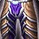

Leggings of Devastation
Leggings of DevastationLeggings of Devastation207 armor, 40 stamina, 42 intellect, 60 spell damage, 60 healing power, 26 spell hit rating (2.06%)Sockets yellow, yellow, blue · Socket bonus 5 healing power, 5 spell damageDrops from Mother Shahraz, Black Temple
207 armor, 40 stamina, 42 intellect, 60 spell damage, 60 healing power,
26 spell hit rating (2.06%)
Sockets yellow, yellow, blue · Socket bonus 5 healing power, 5 spell
damage
Drops from Mother Shahraz, Black Temple
What influencers say
Creators disagree about this item
Showing 3 of 4 captured remarks, widest reach first, with every view
represented
Zatar (Classic Wow Builds)
Zatar (Classic Wow Builds) · 81:02
67k views
Puts it on Shadow Priest
Zatar says they are close to best in slot for a shadow priest and would
bias them there first, since the Channeled Elements legs are heavily
contested, while noting they can go to anyone short on hit.
Joardee
Joardee · 113:56
23k views
Puts it on Shadow Priest
Joardee doubts anyone wants them since a caster would have to need hit
very badly, calls it a bummer of a drop, and settles on giving them out
as a catch-up piece with a shadow priest as the maybe.
Drue
Drue · 17:57
6k views
Puts it on Shadow Priest
Drue puts these in his realistic shadow priest set because the other
pants are far more contested, calling them only minimally worse and much
easier to get, and lists their 26 hit and 60 damage and healing with
gems.
Showing all 6 spec cards.
No specs are selected, so no cards are showing. Use Show every spec to bring all of them back.
Elemental Shaman
Prioritynot yet decided
Constraints
Spell hit cap16%spells
Elemental Precision-6%
Nature's Guidance-3%
Totem of Wrath-3%
Gear needs4%
Entry set4.1%clear
by 0.1%
Tier set, Tier 6 head and shoulder and
chest and hands8.2%clear by 4.1%
No crit cap.
Part of this spec's damage is periodic, and periodic damage cannot crit
in this patch, so crit reaches less of its output than the character
sheet suggests.
Global cooldown floor at 50% spell haste, which nothing rostered reaches
from gear this phase.
Delta
Leggings of
DevastationLeggings of
Devastation207 armor, 40 stamina, 42
intellect, 60 spell damage, 60 healing power, 26 spell hit rating
(2.06%)Sockets yellow, yellow,
blue · Socket bonus 5 healing power, 5 spell damageDrops from Mother Shahraz, Black
Temple in Elemental
Shaman terms EPV
105.38
| Stat | Over best Phase 3 off-piece, Hyjal Summit Leggings of Channeled ElementsLeggings of Channeled Elements207 armor, 25 stamina, 28 intellect, 28 spirit, 59 spell damage, 59 healing power, 18 spell hit rating (1.43%), 34 spell crit rating (1.54%)Sockets yellow, yellow, blue · Socket bonus 5 healing power, 5 spell damageDrops from Kaz'rogal, Mount Hyjal EPV 124.12 | Over Tier 6, Black Temple Skyshatter LegguardsSkyshatter Legguards894 armor, 40 stamina, 42 intellect, 62 spell damage, 62 healing power, 20 spell hit rating (1.58%), 29 spell crit rating (1.31%)Sockets yellow · Socket bonus 2 healing power, 2 spell damageTier set piece, Skyshatter Regalia. Bought with a token, never a raid drop EPV 114.71 | Over best pre-phase off-piece, Tailoring Spellstrike PantsSpellstrike Pants156 armor, 12 stamina, 8 intellect, 46 spell damage, 46 healing power, 22 spell hit rating (1.74%), 26 spell crit rating (1.18%)Sockets blue, yellow, red · Socket bonus 6 staminaCrafted, Tailoring EPV 102.76 | Over Tier 5, Serpentshrine Cavern Cataclysm LeggingsCataclysm Leggings817 armor, 48 stamina, 46 intellect, 54 spell damage, 54 healing power, 14 spell hit rating (1.11%), 24 spell crit rating (1.09%)Sockets yellow · Socket bonus 2 healing power, 2 spell damageTier set piece, Cataclysm Regalia. Bought with a token, never a raid drop EPV 100.50 | ||||
|---|---|---|---|---|---|---|---|---|
| Change | Converted | Change | Converted | Change | Converted | Change | Converted | |
| armor | 0 | -687 | +51 | -610 | ||||
| stamina | +15 | 0 | +28 | -8 | ||||
| intellect | +14 | +0.17% spell crit | 0 | +34 | +0.42% spell crit | -4 | -0.05% spell crit | |
| spirit | -28 | 0 | 0 | 0 | ||||
| spell damage | +1 | -2 | +14 | +6 | ||||
| healing power | +1 | -2 | +14 | +6 | ||||
| spell hit | +8 | +0.63% | +6 | +0.48% | +4 | +0.32% | +12 | +0.95% |
| spell crit | -34 | -1.54% | -29 | -1.31% | -26 | -1.18% | -24 | -1.09% |
| Stat Highlights (Total Change) | -1.36% spell crit +1 spell damage +1 healing power +0.63% spell hit | -2 spell damage -2 healing power +0.48% spell hit -1.31% spell crit | -0.75% spell crit +14 spell damage +14 healing power +0.32% spell hit | -1.14% spell crit +6 spell damage +6 healing power +0.95% spell hit | ||||
Balance Druid
Prioritynot yet decided
Constraints
Spell hit cap16%spells
Balance of Power-4%
Totem of Wrath-3%
Gear needs9%
Entry set8.5%short
by 0.6%
Tier set, Tier 6 head and shoulder and
chest and hands9.4%clear by 0.4%
The entry set holds four Tier 5 pieces, at the head, the shoulder, the
chest and the hands, which is the Tier 5 four-piece, so either token
breaks it; both tokens are raw EPV gains, and this set trades those four
for four Tier 6 pieces, at the head, the shoulder, the chest and the
hands.
No crit cap.
Part of this spec's damage is periodic, and periodic damage cannot crit
in this patch, so crit reaches less of its output than the character
sheet suggests.
Global cooldown floor at 50% spell haste, which nothing rostered reaches
from gear this phase.
Delta
Leggings of
DevastationLeggings of
Devastation207 armor, 40 stamina, 42
intellect, 60 spell damage, 60 healing power, 26 spell hit rating
(2.06%)Sockets yellow, yellow,
blue · Socket bonus 5 healing power, 5 spell damageDrops from Mother Shahraz, Black
Temple in Balance Druid
terms EPV 143.16
| Stat | Over best Phase 3 off-piece, Hyjal Summit Leggings of Channeled ElementsLeggings of Channeled Elements207 armor, 25 stamina, 28 intellect, 28 spirit, 59 spell damage, 59 healing power, 18 spell hit rating (1.43%), 34 spell crit rating (1.54%)Sockets yellow, yellow, blue · Socket bonus 5 healing power, 5 spell damageDrops from Kaz'rogal, Mount Hyjal EPV 157.16 | Over Tier 6, Black Temple Thunderheart PantsThunderheart Pants401 armor, 39 stamina, 48 intellect, 27 spirit, 62 spell damage, 62 healing power, 20 spell hit rating (1.58%), 21 spell crit rating (0.95%)Sockets blue · Socket bonus 2 healing power, 2 spell damageTier set piece, Thunderheart Regalia. Bought with a token, never a raid drop EPV 138.02 | Over best pre-phase off-piece, Tailoring Spellstrike PantsSpellstrike Pants156 armor, 12 stamina, 8 intellect, 46 spell damage, 46 healing power, 22 spell hit rating (1.74%), 26 spell crit rating (1.18%)Sockets blue, yellow, red · Socket bonus 6 staminaCrafted, Tailoring EPV 127.04 | Over Tier 5, Serpentshrine Cavern Nordrassil Wrath-KiltNordrassil Wrath-Kilt367 armor, 37 stamina, 36 intellect, 26 spirit, 54 spell damage, 54 healing power, 26 spell crit rating (1.18%)Sockets blue · Socket bonus 2 healing power, 2 spell damageTier set piece, Nordrassil Regalia. Bought with a token, never a raid drop EPV 108.18 | ||||
|---|---|---|---|---|---|---|---|---|
| Change | Converted | Change | Converted | Change | Converted | Change | Converted | |
| armor | 0 | -194 | +51 | -160 | ||||
| stamina | +15 | +1 | +28 | +3 | ||||
| intellect | +14 | +0.17% spell crit · +3.50 spell damage · +3.50 healing power | -6 | -0.07% spell crit · -1.50 spell damage · -1.50 healing power | +34 | +0.42% spell crit · +8.50 spell damage · +8.50 healing power | +6 | +0.07% spell crit · +1.50 spell damage · +1.50 healing power |
| spirit | -28 | -27 | 0 | -26 | ||||
| spell damage | +1 | -2 | +14 | +6 | ||||
| healing power | +1 | -2 | +14 | +6 | ||||
| spell hit | +8 | +0.63% | +6 | +0.48% | +4 | +0.32% | +26 | +2.06% |
| spell crit | -34 | -1.54% | -21 | -0.95% | -26 | -1.18% | -26 | -1.18% |
| Stat Highlights (Total Change) | -1.36% spell crit +4.50 spell damage +4.50 healing power +0.63% spell hit | -1.03% spell crit -3.50 spell damage -3.50 healing power +0.48% spell hit | -0.75% spell crit +22.50 spell damage +22.50 healing power +0.32% spell hit | -1.10% spell crit +7.50 spell damage +7.50 healing power +2.06% spell hit | ||||
Arcane Mage
Prioritynot yet decided
Constraints
Spell hit cap16%spells
Arcane Focus-10%
Gear needs6%
Entry set6.6%clear
by 0.6%
Tier set, Tier 6 legs6.1%clear
by 0.1%
No crit cap.
Global cooldown floor at 50% spell haste, which nothing rostered reaches
from gear this phase.
Delta
Leggings of
DevastationLeggings of
Devastation207 armor, 40 stamina, 42
intellect, 60 spell damage, 60 healing power, 26 spell hit rating
(2.06%)Sockets yellow, yellow,
blue · Socket bonus 5 healing power, 5 spell damageDrops from Mother Shahraz, Black
Temple in Arcane Mage
terms EPV 85.27
| Stat | Over best Phase 3 off-piece, Hyjal Summit Leggings of Channeled ElementsLeggings of Channeled Elements207 armor, 25 stamina, 28 intellect, 28 spirit, 59 spell damage, 59 healing power, 18 spell hit rating (1.43%), 34 spell crit rating (1.54%)Sockets yellow, yellow, blue · Socket bonus 5 healing power, 5 spell damageDrops from Kaz'rogal, Mount Hyjal EPV 94.31 | Over Tier 6, Black Temple
 Leggings of the TempestLeggings of the Tempest214 armor, 36 stamina, 47 intellect, 29 spirit, 62 spell damage, 62 healing power, 20 spell hit rating (1.58%), 29 spell crit rating (1.31%)Sockets blue · Socket bonus 2 healing power, 2 spell damageTier set piece, Tempest Regalia. Bought with a token, never a raid drop EPV 92.97 |
Over Tier 5, Serpentshrine Cavern Leggings of TirisfalLeggings of Tirisfal195 armor, 37 stamina, 36 intellect, 26 spirit, 54 spell damage, 54 healing power, 26 spell hit rating (2.06%), 17 spell crit rating (0.77%)Sockets yellow · Socket bonus 2 spell hit ratingTier set piece, Tirisfal Regalia. Bought with a token, never a raid drop EPV 77.98 | Over best pre-phase off-piece, Tempest Keep Trousers of the AstromancerTrousers of the Astromancer188 armor, 33 stamina, 36 intellect, 22 spirit, 54 spell damage, 54 healing powerSockets blue, yellow, blue · Socket bonus 5 healing power, 5 spell damageDrops from High Astromancer Solarian, Tempest Keep EPV 77.51 | ||||
|---|---|---|---|---|---|---|---|---|
| Change | Converted | Change | Converted | Change | Converted | Change | Converted | |
| armor | 0 | -7 | +12 | +19 | ||||
| stamina | +15 | +4 | +3 | +7 | ||||
| intellect | +14 | +0.20% spell crit · +4.02 spell damage | -5 | -0.07% spell crit · -1.44 spell damage | +6 | +0.09% spell crit · +1.72 spell damage | +6 | +0.09% spell crit · +1.72 spell damage |
| spirit | -28 | -29 | -26 | -22 | ||||
| spell damage | +1 | -2 | +6 | +6 | ||||
| healing power | +1 | -2 | +6 | +6 | ||||
| spell hit | +8 | +0.63% | +6 | +0.48% | 0 | +26 | +2.06% | |
| spell crit | -34 | -1.54% | -29 | -1.31% | -17 | -0.77% | 0 | |
| Stat Highlights (Total Change) | -1.34% spell crit +5.02 spell damage +1 healing power +0.63% spell hit | -1.39% spell crit -3.44 spell damage -2 healing power +0.48% spell hit | -0.68% spell crit +7.72 spell damage +6 healing power | +0.09% spell crit +7.72 spell damage +6 healing power +2.06% spell hit | ||||
Shadow Priest
Prioritynot yet decided
Constraints
Spell hit cap16%spells
Shadow Focus-10%
Gear needs6%
Entry set7.3%clear
by 1.3%
Tier set, Tier 6 head and shoulder and
chest and hands7.9%clear by 1.9%
No crit cap.
Part of this spec's damage is periodic, and periodic damage cannot crit
in this patch, so crit reaches less of its output than the character
sheet suggests.
Global cooldown floor at 50% spell haste, which nothing rostered reaches
from gear this phase.
Delta
Leggings of
DevastationLeggings of
Devastation207 armor, 40 stamina, 42
intellect, 60 spell damage, 60 healing power, 26 spell hit rating
(2.06%)Sockets yellow, yellow,
blue · Socket bonus 5 healing power, 5 spell damageDrops from Mother Shahraz, Black
Temple in Shadow Priest
terms EPV 118.60
| Stat | Over best Phase 3 off-piece, Hyjal Summit Leggings of Channeled ElementsLeggings of Channeled Elements207 armor, 25 stamina, 28 intellect, 28 spirit, 59 spell damage, 59 healing power, 18 spell hit rating (1.43%), 34 spell crit rating (1.54%)Sockets yellow, yellow, blue · Socket bonus 5 healing power, 5 spell damageDrops from Kaz'rogal, Mount Hyjal EPV 119.76 | Over best pre-phase off-piece, Tailoring Spellstrike PantsSpellstrike Pants156 armor, 12 stamina, 8 intellect, 46 spell damage, 46 healing power, 22 spell hit rating (1.74%), 26 spell crit rating (1.18%)Sockets blue, yellow, red · Socket bonus 6 staminaCrafted, Tailoring EPV 104.09 | Over Tier 5, Serpentshrine Cavern Leggings of the AvatarLeggings of the Avatar195 armor, 37 stamina, 36 intellect, 26 spirit, 54 spell damage, 54 healing power, 25 spell hit rating (1.98%), 18 spell crit rating (0.82%)Sockets yellow · Socket bonus 2 healing power, 2 spell damageTier set piece, Avatar Regalia. Bought with a token, never a raid drop EPV 93.55 | Over Tier 6, Black Temple Leggings of AbsolutionLeggings of Absolution214 armor, 42 stamina, 41 intellect, 28 spirit, 62 spell damage, 62 healing power, 28 spell crit rating (1.27%)Sockets yellow · Socket bonus 2 healing power, 2 spell damageTier set piece, Absolution Regalia. Bought with a token, never a raid drop EPV 84.65 | ||||
|---|---|---|---|---|---|---|---|---|
| Change | Converted | Change | Converted | Change | Converted | Change | Converted | |
| armor | 0 | +51 | +12 | -7 | ||||
| stamina | +15 | +28 | +3 | -2 | ||||
| intellect | +14 | +0.17% spell crit | +34 | +0.42% spell crit | +6 | +0.07% spell crit | +1 | +0.01% spell crit |
| spirit | -28 | 0 | -26 | -28 | ||||
| spell damage | +1 | +14 | +6 | -2 | ||||
| healing power | +1 | +14 | +6 | -2 | ||||
| spell hit | +8 | +0.63% | +4 | +0.32% | +1 | +0.08% | +26 | +2.06% |
| spell crit | -34 | -1.54% | -26 | -1.18% | -18 | -0.82% | -28 | -1.27% |
| Stat Highlights (Total Change) | -1.36% spell crit +1 spell damage +1 healing power +0.63% spell hit | -0.75% spell crit +14 spell damage +14 healing power +0.32% spell hit | -0.74% spell crit +6 spell damage +6 healing power +0.08% spell hit | -1.26% spell crit -2 spell damage -2 healing power +2.06% spell hit | ||||
Affliction Warlock
Prioritynot yet decided
Constraints
Spell hit cap16%spells
Totem of Wrath-3%
Gear needs13.1%
The Suppression talent does not cover this spec's filler spell, so none
of it counts.
Entry set16.1%clear
by 3%
Tier set, Tier 6 head and shoulder and
hands18.3%clear by 5.2%
No crit cap.
Part of this spec's damage is periodic, and periodic damage cannot crit
in this patch, so crit reaches less of its output than the character
sheet suggests.
Global cooldown floor at 50% spell haste, which nothing rostered reaches
from gear this phase.
Delta
Leggings of
DevastationLeggings of
Devastation207 armor, 40 stamina, 42
intellect, 60 spell damage, 60 healing power, 26 spell hit rating
(2.06%)Sockets yellow, yellow,
blue · Socket bonus 5 healing power, 5 spell damageDrops from Mother Shahraz, Black
Temple in Affliction
Warlock terms EPV
141.87
| Stat | Over best Phase 3 off-piece, Hyjal Summit Leggings of Channeled ElementsLeggings of Channeled Elements207 armor, 25 stamina, 28 intellect, 28 spirit, 59 spell damage, 59 healing power, 18 spell hit rating (1.43%), 34 spell crit rating (1.54%)Sockets yellow, yellow, blue · Socket bonus 5 healing power, 5 spell damageDrops from Kaz'rogal, Mount Hyjal EPV 146.46 | Over Tier 6, Black Temple Leggings of the MaleficLeggings of the Malefic214 armor, 55 stamina, 44 intellect, 62 spell damage, 62 healing power, 19 spell hit rating (1.51%), 37 spell crit rating (1.68%)Sockets yellow · Socket bonus 2 spell hit ratingTier set piece, Malefic Raiment. Bought with a token, never a raid drop EPV 133.83 | Over best pre-phase off-piece, Tailoring Spellstrike PantsSpellstrike Pants156 armor, 12 stamina, 8 intellect, 46 spell damage, 46 healing power, 22 spell hit rating (1.74%), 26 spell crit rating (1.18%)Sockets blue, yellow, red · Socket bonus 6 staminaCrafted, Tailoring EPV 129.44 | Over Tier 5, Serpentshrine Cavern Leggings of the CorruptorLeggings of the Corruptor195 armor, 48 stamina, 32 intellect, 55 spell damage, 55 healing power, 24 spell hit rating (1.90%), 32 spell crit rating (1.45%)Sockets yellow · Socket bonus 3 staminaTier set piece, Corruptor Raiment. Bought with a token, never a raid drop EPV 128.02 | ||||
|---|---|---|---|---|---|---|---|---|
| Change | Converted | Change | Converted | Change | Converted | Change | Converted | |
| armor | 0 | -7 | +51 | +12 | ||||
| stamina | +15 | -15 | +28 | -8 | ||||
| intellect | +14 | +0.17% spell crit | -2 | -0.02% spell crit | +34 | +0.42% spell crit | +10 | +0.12% spell crit |
| spirit | -28 | 0 | 0 | 0 | ||||
| spell damage | +1 | -2 | +14 | +5 | ||||
| healing power | +1 | -2 | +14 | +5 | ||||
| spell hit | +8 | +0.63% | +7 | +0.55% | +4 | +0.32% | +2 | +0.16% |
| spell crit | -34 | -1.54% | -37 | -1.68% | -26 | -1.18% | -32 | -1.45% |
| Stat Highlights (Total Change) | -1.37% spell crit +1 spell damage +1 healing power +0.63% spell hit | -1.70% spell crit -2 spell damage -2 healing power +0.55% spell hit | -0.76% spell crit +14 spell damage +14 healing power +0.32% spell hit | -1.33% spell crit +5 spell damage +5 healing power +0.16% spell hit | ||||
Destruction Warlock
Prioritynot yet decided
Constraints
Spell hit cap16%spells
Totem of Wrath-3%
Gear needs13.1%
No hit talent exists for this spec.
Entry set13.5%clear
by 0.4%
Tier set, Tier 6 head and shoulder and
hands15.4%clear by 2.3%
No crit cap.
Global cooldown floor at 50% spell haste, which nothing rostered reaches
from gear this phase.
Delta
Leggings of
DevastationLeggings of
Devastation207 armor, 40 stamina, 42
intellect, 60 spell damage, 60 healing power, 26 spell hit rating
(2.06%)Sockets yellow, yellow,
blue · Socket bonus 5 healing power, 5 spell damageDrops from Mother Shahraz, Black
Temple in Destruction
Warlock terms EPV
177.44
| Stat | Over best Phase 3 off-piece, Hyjal Summit Leggings of Channeled ElementsLeggings of Channeled Elements207 armor, 25 stamina, 28 intellect, 28 spirit, 59 spell damage, 59 healing power, 18 spell hit rating (1.43%), 34 spell crit rating (1.54%)Sockets yellow, yellow, blue · Socket bonus 5 healing power, 5 spell damageDrops from Kaz'rogal, Mount Hyjal EPV 182.13 | Over Tier 6, Black Temple Leggings of the MaleficLeggings of the Malefic214 armor, 55 stamina, 44 intellect, 62 spell damage, 62 healing power, 19 spell hit rating (1.51%), 37 spell crit rating (1.68%)Sockets yellow · Socket bonus 2 spell hit ratingTier set piece, Malefic Raiment. Bought with a token, never a raid drop EPV 170.17 | Over Tier 5, Serpentshrine Cavern Leggings of the CorruptorLeggings of the Corruptor195 armor, 48 stamina, 32 intellect, 55 spell damage, 55 healing power, 24 spell hit rating (1.90%), 32 spell crit rating (1.45%)Sockets yellow · Socket bonus 3 staminaTier set piece, Corruptor Raiment. Bought with a token, never a raid drop EPV 159.59 | Over best pre-phase off-piece, Tailoring Spellstrike PantsSpellstrike Pants156 armor, 12 stamina, 8 intellect, 46 spell damage, 46 healing power, 22 spell hit rating (1.74%), 26 spell crit rating (1.18%)Sockets blue, yellow, red · Socket bonus 6 staminaCrafted, Tailoring EPV 156.43 | ||||
|---|---|---|---|---|---|---|---|---|
| Change | Converted | Change | Converted | Change | Converted | Change | Converted | |
| armor | 0 | -7 | +12 | +51 | ||||
| stamina | +15 | -15 | -8 | +28 | ||||
| intellect | +14 | +0.17% spell crit | -2 | -0.02% spell crit | +10 | +0.12% spell crit | +34 | +0.42% spell crit |
| spirit | -28 | 0 | 0 | 0 | ||||
| spell damage | +1 | -2 | +5 | +14 | ||||
| healing power | +1 | -2 | +5 | +14 | ||||
| spell hit | +8 | +0.63% | +7 | +0.55% | +2 | +0.16% | +4 | +0.32% |
| spell crit | -34 | -1.54% | -37 | -1.68% | -32 | -1.45% | -26 | -1.18% |
| Stat Highlights (Total Change) | -1.37% spell crit +1 spell damage +1 healing power +0.63% spell hit | -1.70% spell crit -2 spell damage -2 healing power +0.55% spell hit | -1.33% spell crit +5 spell damage +5 healing power +0.16% spell hit | -0.76% spell crit +14 spell damage +14 healing power +0.32% spell hit | ||||